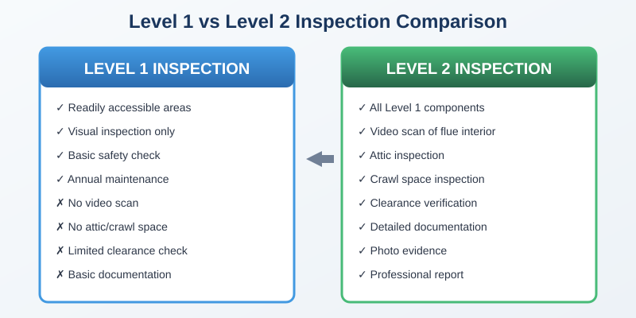
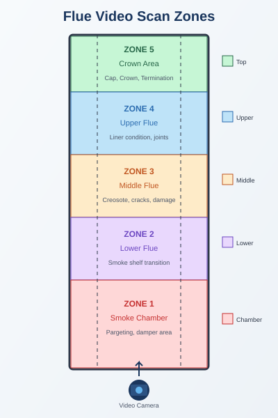
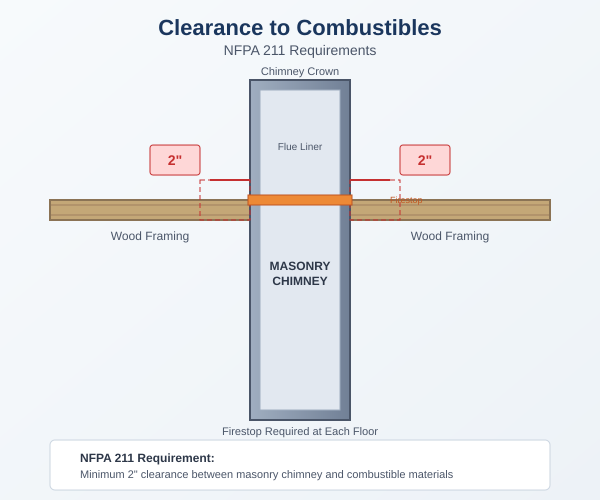
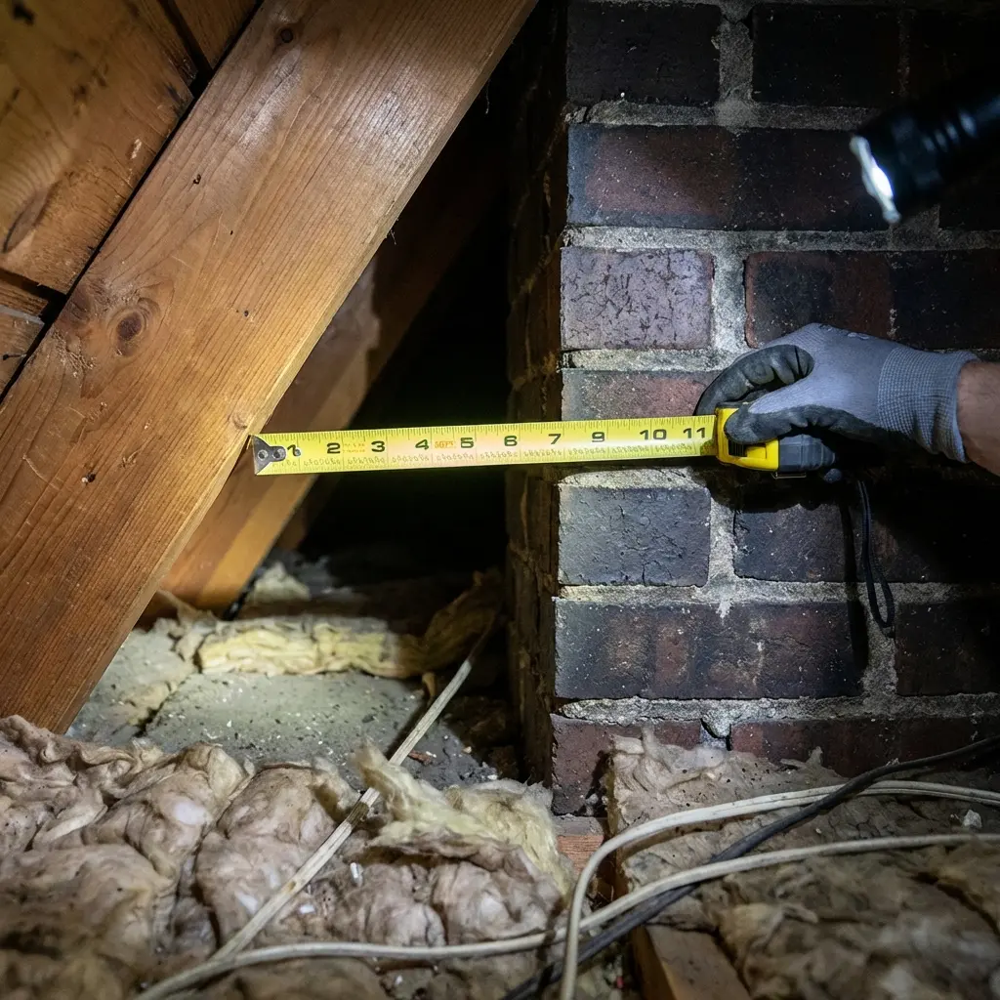
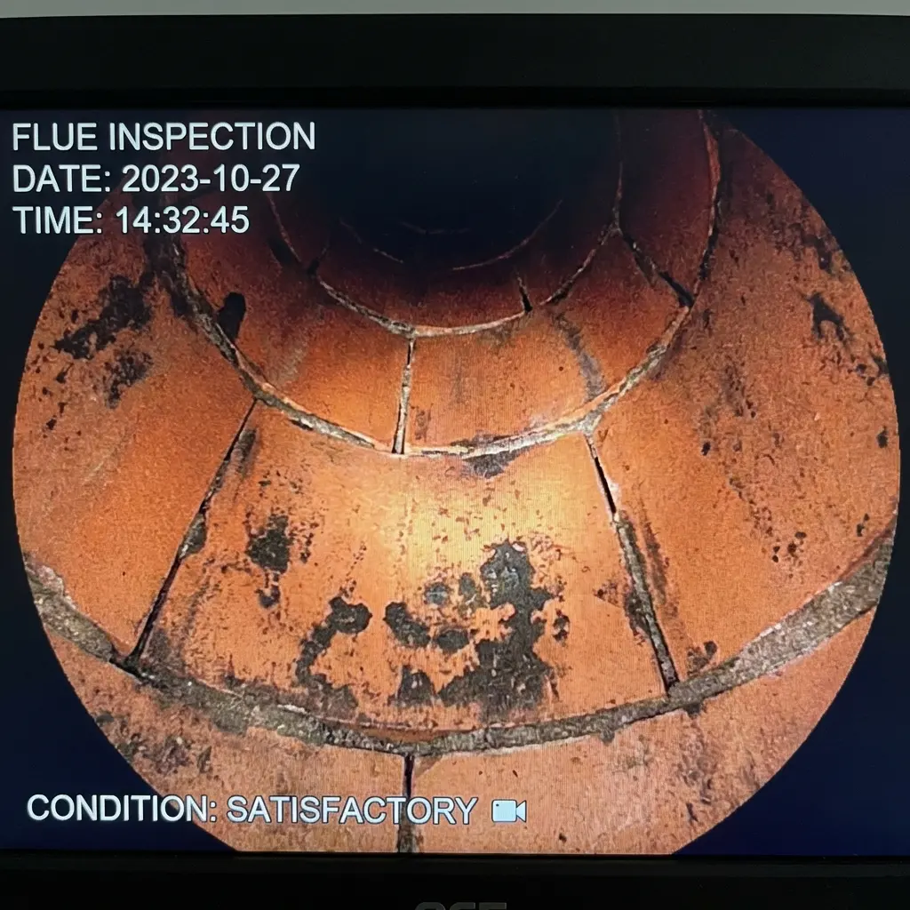
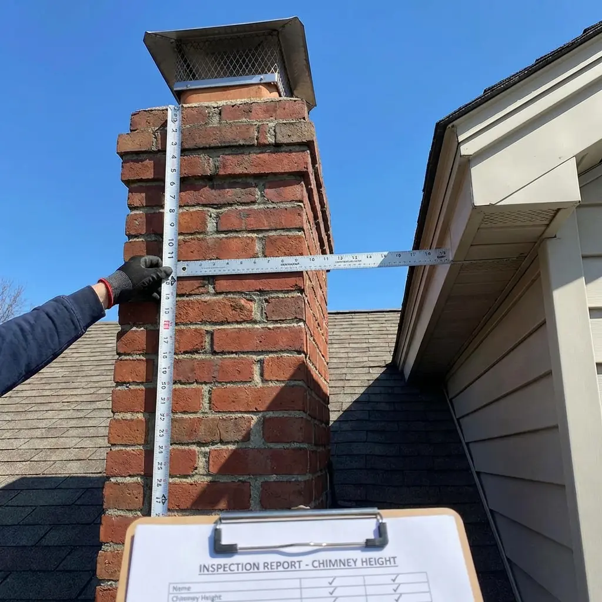

Property Information
Chimney System Configuration
| Appliance Type: | Masonry Fireplace |
| Fuel Type: | Solid Fuel (Wood) |
| Venting Method: | Natural Draft |
| Flue Count: | Single |
| Chimney Location: | Interior Masonry |
Reason for Inspection
This Level 2 inspection was performed due to:
- ☑ Property transfer / real estate transaction
- ☐ Change in appliance or fuel type
- ☐ Post-fire or post-event evaluation
- ☐ Other system modification
NFPA 211 Trigger Statement
This Level 2 inspection was required under NFPA 211 due to a change in ownership and real estate transfer. NFPA 211 specifies that a Level 2 inspection is necessary when a property is sold or transferred, when a system is modified, or when damage is suspected following an external event.
Inspection Scope
This Level 2 inspection was conducted in accordance with NFPA 211 Standard for Chimneys, Fireplaces, Vents, and Solid Fuel-Burning Appliances. A Level 2 inspection includes all areas accessible from the Level 1 inspection plus:
- Video scan examination of the flue interior
- Accessible attic, crawl space, and basement areas
- Clearances to combustible materials
- Proper construction and connections
- Evaluation of appliance changes or additions
Access & Exceptions
All readily accessible and safely accessible areas were inspected at the time of evaluation. Areas that were not accessible due to structural obstructions, safety concerns, or finished construction are documented as limitations where applicable.
Areas Not Accessible / Limited Access
| Area | Reason | Impact |
|---|---|---|
| Smoke Chamber Upper | Camera articulation limitation | Partial visibility |
| Crawl Space | Low clearance | Visual-only inspection |
| Exterior Rear Elevation | Roof pitch / safety | Drone recommended |

A comparison of documentation depth between Level 1 and Level 2 inspections is available here: → NFPA 211 Level 1 vs Level 2 Inspection Documentation Overview
Video Scan Documentation
A complete video scan examination of the flue interior was performed to identify any hidden defects, deterioration, or obstructions.
Flue Liner System Identified
The chimney flue is constructed with a clay tile liner system. Joints and tile sections were evaluated for continuity, cracking, displacement, and mortar integrity.

Video Scan Findings
| Zone | Condition | Notes |
|---|---|---|
| Smoke Chamber | Satisfactory | No defects observed |
| Flue Liner | Satisfactory | Minor creosote deposits |
| Crown Area | Satisfactory | No visible damage |
Clearance to Combustibles
Clearances between the chimney and combustible materials were inspected in all accessible areas per NFPA 211 requirements.

| Location | Required Clearance | Actual Clearance | Status |
|---|---|---|---|
| Attic Penetration | 2 inches | 2.5 inches | Compliant |
| Floor Penetration | 2 inches | 2 inches | Compliant |
Photo Documentation



Summary of Findings
✓ Satisfactory Items
- Chimney structure and masonry integrity
- Flue liner condition
- Clearances to combustibles
- Chimney cap and termination
⚠ Requires Attention
- Minor creosote buildup - recommend cleaning
✗ Deficient Items
- None identified
Recommendations
- Schedule chimney sweeping to remove light creosote deposits before next heating season.
- Continue annual Level 1 inspections as part of regular maintenance.
- Monitor for any changes in appliance performance or draft issues.
Limitations & Disclaimers
This inspection is limited to readily accessible and visible components at the time of inspection. Concealed conditions, underground components, or areas requiring destructive investigation are beyond the scope of this report.
This report is prepared in accordance with NFPA 211 and represents the condition of the chimney system at the time of inspection. Future conditions may vary due to use, weather, or other factors.
This inspection references NFPA 211 standards and CSIA best practices for chimney inspection documentation. This report does not constitute a municipal code compliance audit.
Level 3 Inspection Boundary
This inspection does not include destructive testing or concealed structural analysis. Conditions requiring demolition, removal of finishes, or invasive testing fall under a Level 3 inspection as defined by NFPA 211.
Frequently Asked Questions
When is a Level 2 chimney inspection required under NFPA 211?
A Level 2 inspection is required when a property is sold or transferred, when a heating appliance or fuel type is changed, or when damage is suspected following a fire, earthquake, or other event.
Does a Level 2 inspection include a video scan?
Yes. A Level 2 inspection typically includes a video scan of the flue interior to evaluate concealed areas not visible during a Level 1 inspection.
Is a Level 2 inspection the same as a Level 3 inspection?
No. A Level 3 inspection involves destructive investigation or removal of building components and is only performed when serious hazards are suspected.
Can a Level 2 inspection replace annual inspections?
No. NFPA 211 recommends continued annual Level 1 inspections even after a Level 2 inspection has been completed.
For an example of how routine annual inspections are documented, see: NFPA 211 Level 1 Chimney Inspection Report Example
Inspector Certification
Inspector Name: John Smith, CSIA Certified
Certification Number: CSIA-12345
Company: Certified Chimney Professionals
Date: January 14, 2026